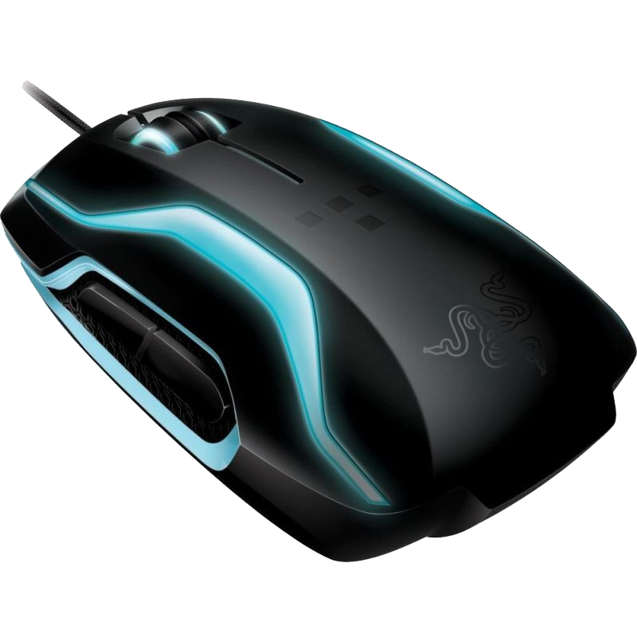

Es un periferico de entrada con el el cual se comunica la computadora para hacerlo mas facil el movimiento.

Historia
Fue diseñado por Douglas Engelbart y Bill English durante los años 60 en el Stanford Research Institute, un laboratorio de la Universidad de Stanford, en pleno Silicon Valley en California. Más tarde fue mejorado en los laboratorios de Palo Alto de la compañía Xerox (conocidos como Xerox PARC). Su invención no fue un hecho banal ni fortuito, sino que surgió dentro de un proyecto importante que buscaba aumentar el intelecto humano mejorando la comunicación entre el hombre y la máquina. Con su aparición, logró también dar el paso definitivo a la aparición de los primeros entornos o interfaces gráficas de usuario.
Tipos de ratones
- Mecánicos: Tienen una gran esfera de plástico o goma, de varias capas, en su parte inferior para mover dos ruedas que generan pulsos en respuesta al movimiento de éste sobre la superficie. Una variante es el modelo de Honeywell que utiliza dos ruedas inclinadas 90 grados entre ellas en vez de una esfera.
- Laser: Funciona de manera similar al óptico pero, en vez de poseer un haz de luz, presenta un láser imperceptible que lo hace más preciso y sensible.
- Touch: Esta clase de mouse está conformado por una única pieza que consiste en una superficie alisada que equivale a un botón donde el usuario desliza sus dedos para mover el curso y presiona sobre este para seleccionar.
- Mouse ergonomico: Al afirmar verticalmente el Mouse, se reduce la presión en el nervio medio de la muñeca. Reduce las molestias asociadas al Síndrome del Túnel Carpiano y Tendinitis. La comodidad es aumentada al mantener el brazo y hombros en una posición más relajada.
Conectividad
- Puertos Os/2
- USB
- Inalambrica
Regresar a menu